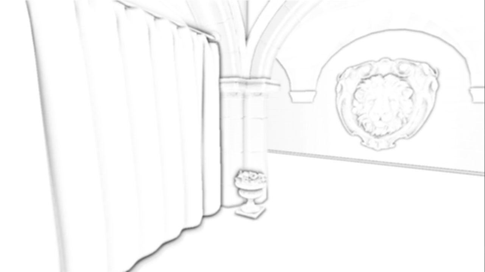

Progression
Description
Progression is a 3D game engine written in C++ for Linux and Windows. It originally started out as an simple OpenGL renderer for class projects, but it now features a Vulkan renderer, Lua scripting, skeletal animation, asset serialization, and more. It is my largest project to date, even though I keep rewriting it as I learn more and gain more experience with C++ and graphics.
Code
Code from this project can be found on Github here
Features
Note: for SSAO, deferred rendering, and normal mapping I partnered up with Zach Chavis for them as part of a project
Screen Space Ambient Occlusion (SSAO)
We took the approach described in this tutorial. This method randomly samples many nearby points for each pixel, and return which fraction of those samples were occluded by other nearby geometry. This can be seen in the following image:

Two example of the SSAO hemisphere for two points. Image from the tutorial above.
To sample random points within this hemisphere surrounding each pixel, we need to use random offsets. Since it would be impracticle to generate or store random offsets for each possible orientation of the hemisphere, we instead create a buffer of random offsets in the tangent space.
Sponza without SSAO (left) and Sponza with SSAO (right).
The ambient occlusion texture.
Deferred Rendering
While I had written a tiled-deferred renderer in OpenGL, current Vulkan renderer is just regular deferred rendering without even light volumes currently. Tiled deferred or F+ is on the docket. Only just started trying to consider the GBuffer size and reduce it, but the current GBuffer looks like this:
- Positions: RGBA32_FLOAT
- Normals: RGBA8_UNORM (compressed using 24-bit octahedron encoding)
- Diffuse and Specular Colors: RGBA16_UINT (upper 8 bits of RGB are diffuse color, lower 8 are specular, and the alpha component is the 16 bit specular exponent)
- Ambient Occlusion: R8_UNORM
- Depth: 32 bit
While positions and normals do not need the alpha channel, my GPUs do not support RGB textures with optimal tiling. Initially normals were RGBA32_FLOAT, the diffuse and specular were RGBA_UNORM and RGBA16_FLOAT respectively. With each change to the gbuffer we saw the following timings:

Sponza timings with 4 lights in 1080p on my RTX 2080. Yes, the SSAO pass is very unoptimized currently.
I am currently trying to figure out if 16 bit positions are okay, and play around with what I could put in the alpha channel instead of it being unused. I also want to try getting rid of the position buffer altogether and just recover it via the depth buffer.
Normal Mapping
The VBO stores the normals and tangents, but not the bitangents since those are calculated in the shader. The TBN matrix which transforms vectors from tangents space to world space is calculated with the following pseudocode:
vec3 worldT = normalize( modelMatrix * inTangent );
vec3 worldN = normalize( inverse( transpose( modelMatrix ) ) * inNormal );
vec3 worldB = cross( worldN, worldT );
TBN = mat3( worldT, worldB, worldN );All the blogs and tutorials we saw online multiply both the tangent and normal by just the model matrix, but we are pretty sure that since the normal does not lie on the geometry surface, just multiplying by the model matrix would skew the result for non-uniform scaling. The tangent and bitangent lie along the surface though and do not need the inverse transpose. We then just look up the normal map value, normalize to [-1, 1] and apply the matrix:
vec3 n = texture( normalMap, texCoord );
n = normalize( n * 2 - 1 );
n = normalize( TBN * n );
Profiling and RenderDoc Integration
Videos
A short demo highlighting some of the more recent rendering features